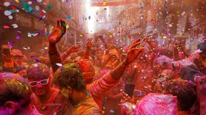

Holi’s traditions vary throughout the country and have their roots in Indian mythology. In many places the festival is associated with the legend of Hiranyakashipu, a demon king in ancient India. Hiranyakashipu enlisted the help of his sister, Holika, to kill his son, Prahlada, a devoted worshipper of the god Vishnu. In an attempt to burn Prahlada, Holika sat with him on a pyre while wearing a cloak that protected her from the fire. But the cloak protected Prahlada instead, and Holika burned. Later that night Vishnu succeeded in killing Hiranyakashipu, and the episode was heralded as a triumph of good over evil. In many places in India, a large pyre is lit on the night before Holi to celebrate this occasion.